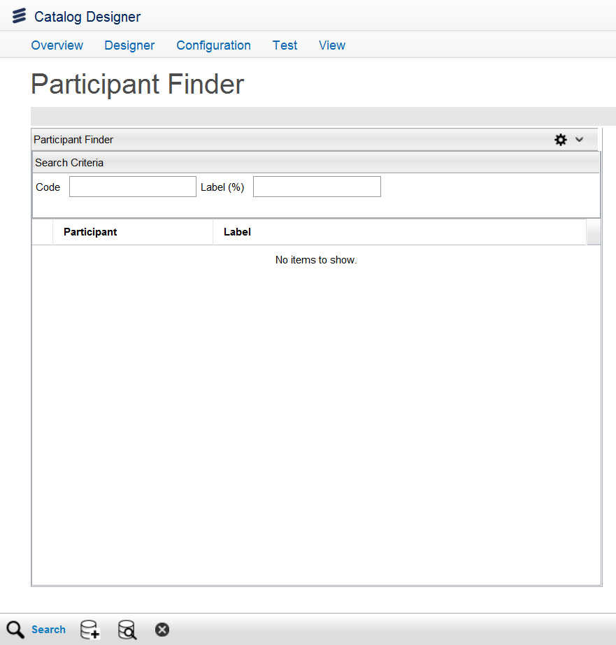

Configure ParticipantsYou can access the Configure Participants option using the Quick Start menu on the Ericsson Catalog Manager home page or from the menu bar by clicking Configuration > Configure PLD > Configure Participants. You can Search, Add, Edit, and Delete participants from this page.  Search ParticipantTo search a participant, enter the search criteria in the Code or Label (%) field, and then click the Search button. Add ParticipantNote: If you create a new participant, you need to create new metadata for that participant and modify additional scripts (for example, the getLifecycle script and the ObjectLifeCycleModified script) to accommodate metadata changes for the new participant. To add a new participant, do the following:
Edit ParticipantTo edit a participant, do the following:
Delete ParticipantTo delete a participant, select one from the list, and click the Delete button. |